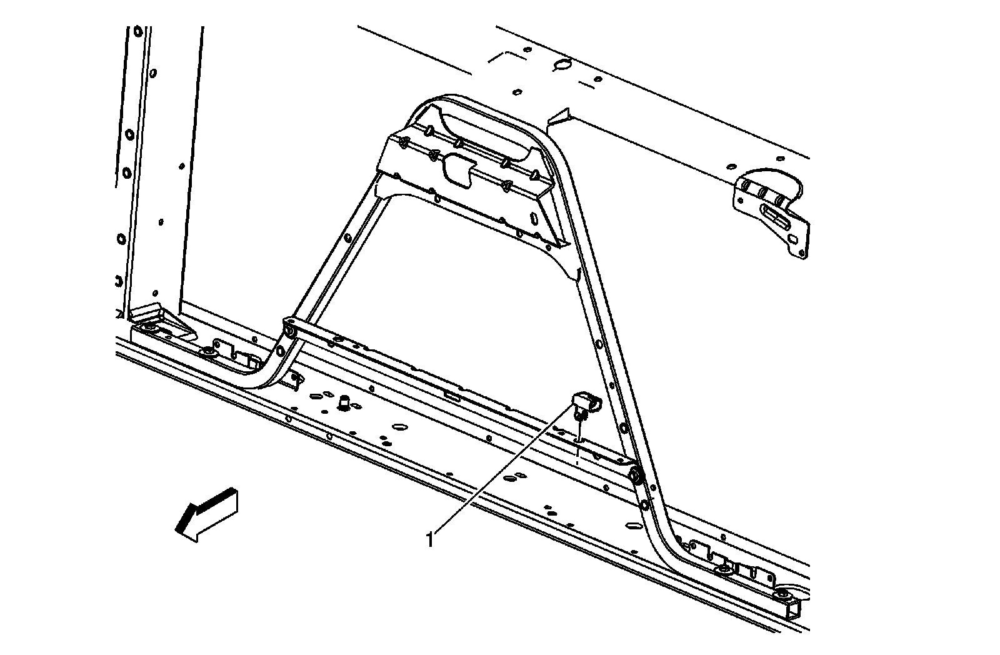
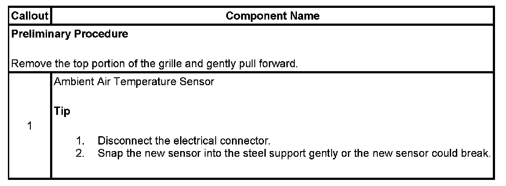

Operation CHARM
: Car repair manuals for everyone.
Home
>>
Cadillac
>>
2007
>>
Escalade ESV AWD V8-6.2L
>>
Repair and Diagnosis
>>
Heating and Air Conditioning
>>
Sensors and Switches - HVAC
>>
Ambient Temperature Sensor / Switch HVAC
>>
Service and Repair
>>
Ambient Air Temperature Sensor - With RPO DF5
Ambient Air Temperature Sensor - With RPO DF5
AMBIENT AIR TEMPERATURE SENSOR REPLACEMENT (WITH RPO CODE DF5)

